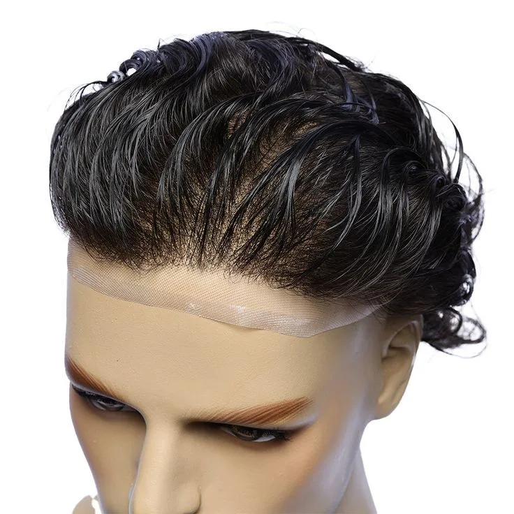

Colocación y Mantenimiento de Prótesis Capilar en Sevilla
Soluciones capilares completas para hombre, con mantenimiento incluido en el plan mensual
Pago único
Colocación de Prótesis
Proceso profesional y discreto en una sola sesión. Trabajamos con bases de última generación:
Lace: Ultrafina, transpirable, ideal para climas cálidos
Skin/Ultrathin: Máxima naturalidad en el contorno
Híbridas: Lo mejor de ambas tecnologías
Tiempo estimado: 1-2 horas | Resultado inmediato
Suscripción mensual
Mantenimiento Mensual
Con nuestro plan de suscripción, olvidarte del cuidado es nuestra prioridad:
Limpieza profunda y desinfección
Reposición de adhesivos
Corte y estilizado del cabello
Revisión del estado de la prótesis
Asesoramiento personalizado
Frecuencia recomendada: cada 3-4 semanas
Cuidamos cada detalle
Cercanía y artesanía en cada proceso, sin franquicias ni protocolos impersonales.
100% Personalizado
Cada prótesis se elabora a partir de un molde a medida de tu cuero cabelludo, sin plantillas genéricas.
Materiales de Primera Calidad
Bases Lace, Skin e Híbridas certificadas, seleccionadas por su durabilidad y su acabado indetectable.
Colocación a Domicilio o en Estudio
Sin franquicias ni intermediarios: te atendemos nosotros mismos en cada cita, en nuestro estudio de Sevilla o a domicilio si prefieres mayor privacidad.
Prótesis Capilar Personalizada
Cada prótesis se fabrica a medida contigo. Estas son las variables que ajustamos antes de confeccionarla.
Tipo de Base
Skin, Swiss Lace, French Lace o Lace con PU: elegimos la que mejor se adapta a tu cuero cabelludo y tu día a día.
Densidad
De un 50% a un 130%, para lograr un volumen tan natural como el de tu propio cabello.

Ondulación
Desde liso hasta rizo marcado: ajustamos la textura del cabello a la que ya tienes.
Tono y Canas
Igualamos tu color exacto y el porcentaje de canas, con muestra de cabello si lo prefieres.
Frontal
Graduado o sin graduar, para reproducir un nacimiento de cabello indetectable.
Molde a Medida
Tomamos el molde exacto de tu cuero cabelludo para un ajuste perfecto, punto por punto.